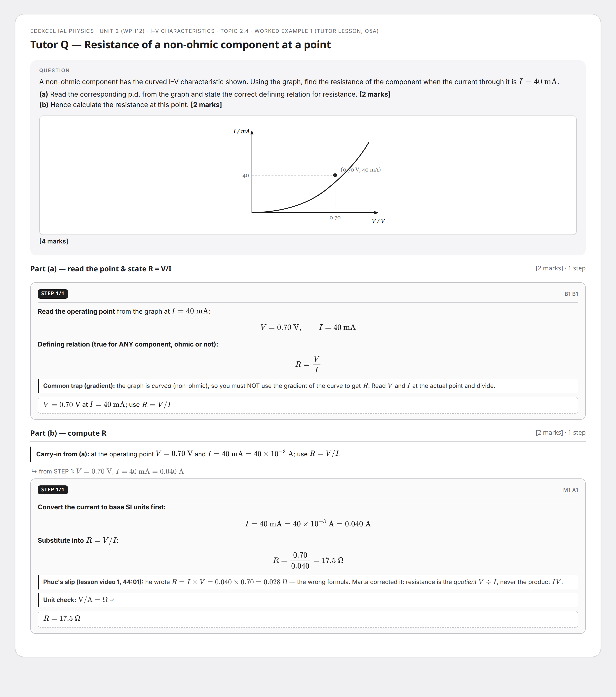
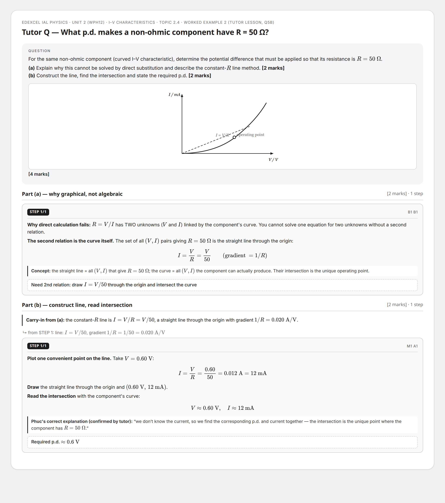
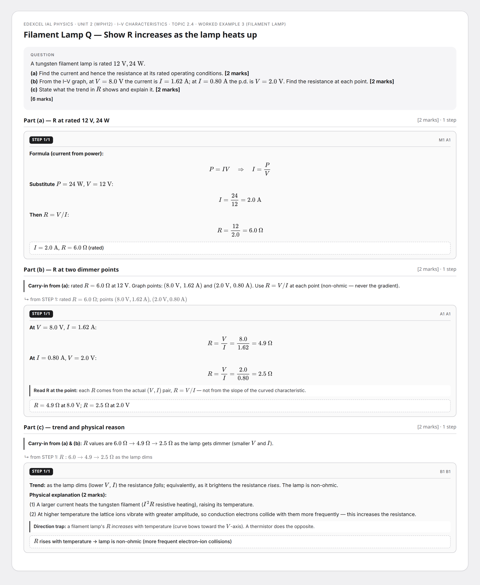
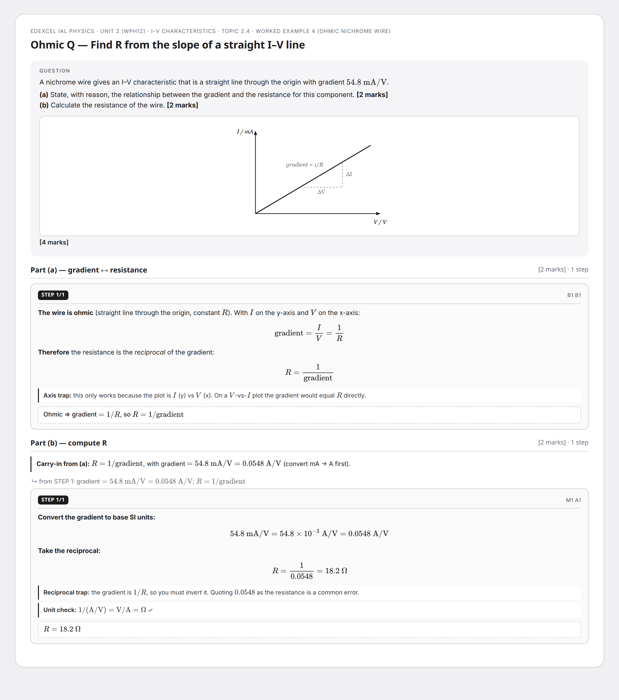
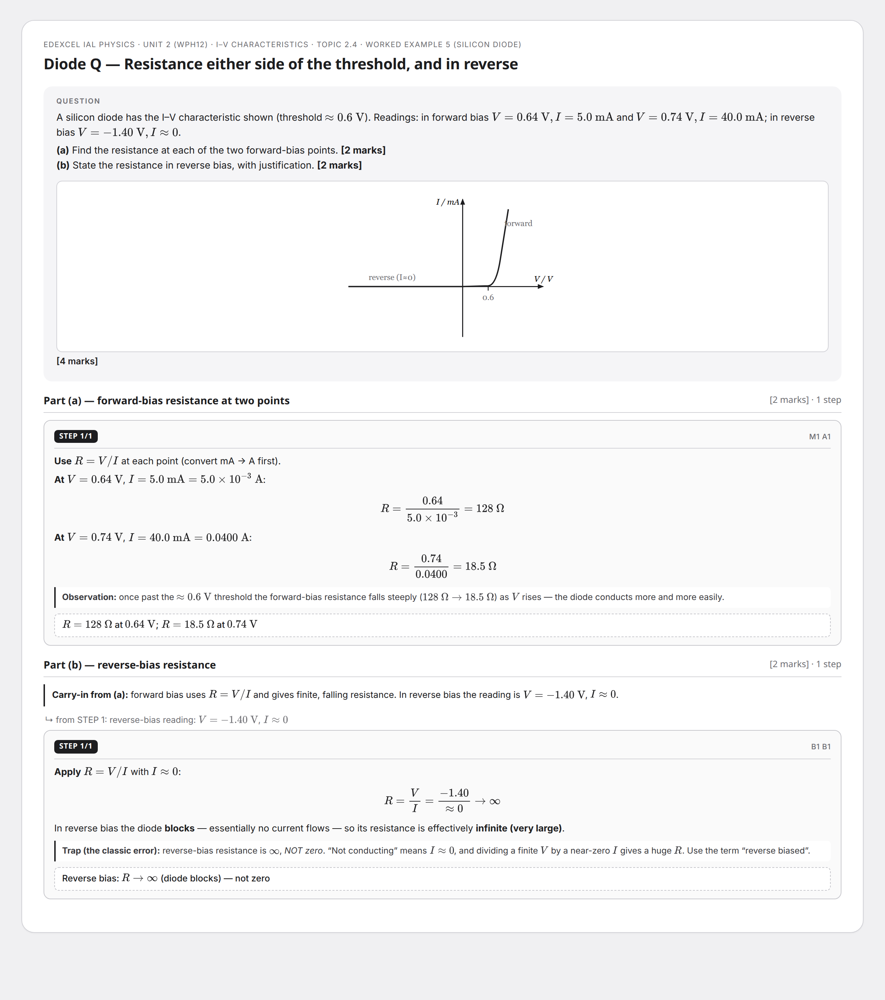
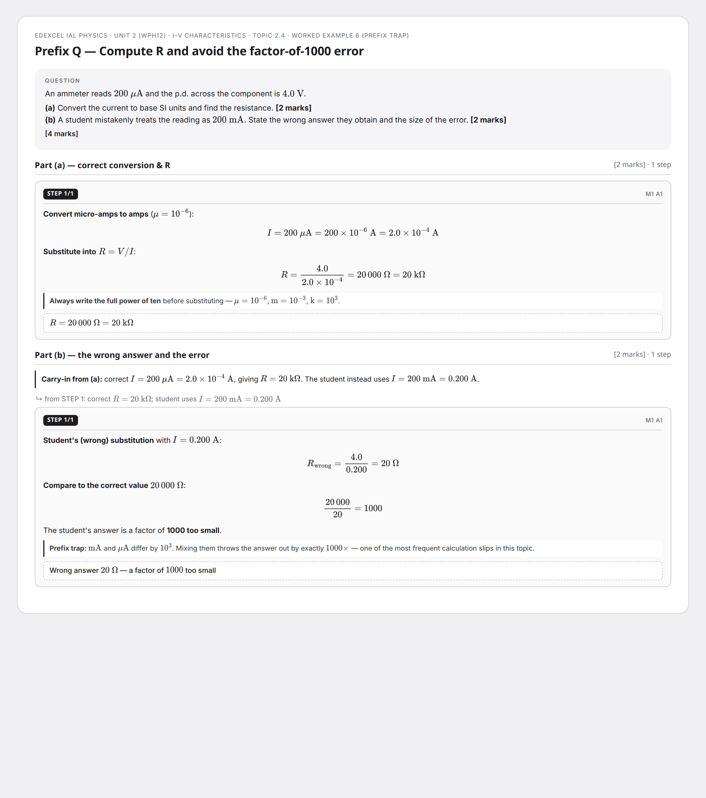

Physics Unit 2 — I–V Characteristics of Components
Edexcel IAL Physics · Topic 2.4 · Multi-step image-occlusion flashcards. Each grey Step box is a maskable Anki IO target; the question header + STEP badge stay visible. Drag the PNG into Anki and mask each Step box.
Reading Resistance off a Non-Ohmic Graph (Tutor Q5a)
4 marks · 2 parts

Graphical Method for a Target Resistance (Tutor Q5b)
4 marks · 2 parts

Filament Lamp — Resistance at Three Operating Points
6 marks · 3 parts

Ohmic Wire — Resistance from the Gradient
4 marks · 2 parts

Semiconductor Diode — Forward & Reverse Bias
4 marks · 2 parts

Unit-Prefix Trap — Micro (µA) vs Milli (mA)
4 marks · 2 parts
